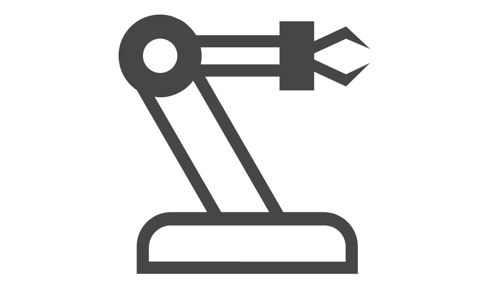

Mit der von Siemens bereitgestellten Portal Shop Floor-Benutzeroberfläche können Sie in der Anwendung Fertigungsaktionen ausführen. Informationen zu den Standardseiten für Fertigungsaktionen, die von Siemens bei der Installation von Opcenter Execution Core bereitgestellt werden, finden Sie im Opcenter Execution Core Shop Floor-Benutzerhandbuch. Informationen zum Anmelden bei der Anwendung, zum Navigieren in der Anwendung und zum Verwenden der allgemeinen Fertigungsfelder und -funktionen finden Sie im Execution Core Erste Schritte – Benutzerhandbuch.
Bei der Installation von Opcenter Execution Semiconductor werden dem primären Navigationsmenü standardmäßig zusätzliche Menüelemente hinzugefügt. Diese Menüelemente ermöglichen den Zugriff auf Seiten, über die Sie Opcenter Execution Semiconductor-Fertigungsaktionen durchführen können.
|
Symbol oder Menü |
Klicken Sie auf dieses Symbol oder Menü, um Folgendes anzuzeigen . . . |
|---|---|
|
Lagerbestand |
Liste der Transaktionsseiten für Lagerbestand. |
|
Ablaufplanung |
Liste der Seiten zum Planen von Losen. |
|
Umlaufbestand (WIP) |
Zeigt Transaktionsseiten zum Bewegen von Losen durch den Umlaufbestandsprozess an. |
|
 Ressource |
Liste der Ressourcentransaktionsseiten. |
|
Behälter |
Liste der Seiten für die Behälterverwaltung. |
|
Ad-hoc |
Liste der Ad-hoc-Transaktionsseiten. |
|
Material |
Liste der Materialverwaltungsseiten. |
|
Abfrage |
Liste der Suchseiten. |